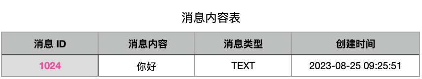
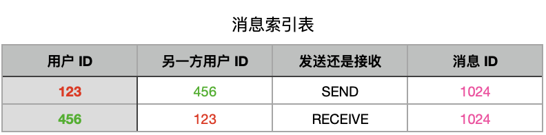
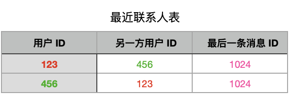
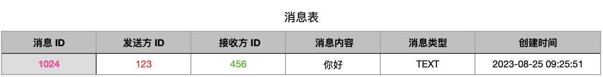

为了查看历史消息或者暂存离线消息，大部分 IM 系统都需要对消息进行服务端存储。下面以一对一的单聊为例介绍一下业界一般是如何设计 IM 消息存储方案的，然后再介绍下 TT 具体是如何做的，有什么区别。
索引和内容独立存储
单聊消息的参与方有两个：
- 发送方
- 接收方
收发双方的历史消息是相互独立的。我用个例子解释一下：
女神给你发消息说：「今天七夕，给我发个7777红包，我要截图发朋友圈，一会还你」。你毫不犹豫给女神发了过去。女神在截图前将「今天七夕，给我发个7777红包……」这句话进行了删除。
相互独立的意思是说，一方删除消息不影响另一方的展示，女神那一侧删了，你这一侧是不受影响的，如果女神赖账不还，你可以把你这边的完整对话记录拿出来和她对峙。
基于以上逻辑，在设计数据库表结构时我们需要为收发双方维护各自的索引记录。
由于收发双方看到的消息内容实际是一致的，我们没有必要将内容存储两次，所以可以有一个表来独立存储消息内容。
「消息内容表」存储消息纬度的基本信息，如：
- 消息ID
- 消息内容
- 消息类型
- 消息时间
收发双方的「消息索引表」通过唯一的消息 ID 来和消息内容进行关联，同时还要有一个枚举字段来记录这是条发送消息还是接收消息。
假设用户123给用户456发送一条消息，消息存储在关系型数据库中，上边涉及的两张表大致如下：


123给456发了一条「你好」的消息，这个动作会在消息内容表中存储一条消息，这条消息的 ID 为1024。
同时往索引表里存储两条数据：
- 用户ID 为123，另一方用户 ID 为456，这是条发出消息，消息 ID 为1024
- 用户ID 为456，另一方用户 ID 为123，这是条接收消息，消息 ID 为1024
业界也常将消息的发出和接收这两个纬度抽象为发件箱和收件箱。
联系人列表
一般 IM 系统还需要一个最近联系人列表，来让互动双方快速查找需要聊天的对象，联系人列表一般还会携带两人最近一条聊天消息用于展示。

继续以 123 给 456 发消息为例，除了在内容表和索引表插入记录，还会更新各自的最近联系人表。上图中我们将 用户 ID=123 && 另一方用户 ID=456 和 用户 ID=456 && 另一方用户 ID=123 的两行数据中的最后一条消息 ID 字段更新为 1024。为了便于客户端排序和展示，很多时候我们还会在最近聊系人表中冗余其他信息，如最后一条消息时间。
在大部分业务场景中，如果 123 是第一次给 456 发消息，会在发送消息的时候通过其他数据（如互关、好友等）校验双方好友状态，校验通过后给双方创建出联系人记录，这一点 TT 和常规做法略有区别，后文会做介绍。
联系人列表和消息索引表的区别如下：
- 联系人列表只更新存储收发双方的最新一条消息，不存储两人所有的历史消息
- 联系人表的使用场景用于查询某一个人最近的所有联系人，是用户全局维度
- 消息索引表的使用场景一般用于查询收发双方的历史聊天记录，是聊天会话维度
- 收发一条消息时
- 联系人列表为更新操作
- 消息索引表为插入操作
TT 中的 IM 存储设计
消息表
TT 中将索引表和内容表进行了合并成了一张消息表，同时通讯录表承担了更多的工作。

要查询 123 和 321 之间的聊天记录时，使用 WHERE ((user_id=123 AND other_user_id=456) OR (user_id=456 AND other_user_id=123)) 条件来进行查询。
这样的好处是要维护的表和冗余的数据更少一些，之前一个 索引表+一个内容表 的形式，每发送一条消息，不算联系人表更新的话，要有3次插入操作：1次内容表插入，2次索引表插入。
为什么索引表是2次插入，而不是用1次插入来同时写两条数据？考虑到数据量，大部分情况下，索引表会根据主态的用户 ID 进行分片存储，收发双方的数据大概率不在同一分片上，进而导致无法通过一条语句写入两条数据。将索引和内容表合并后，只需要插入1条数据，对于单方可见的消息，我们在消息的一个额外字段中进行描述即可。
架构本质上是一个需要权衡的过程，这种模式有优点的同时也有缺点。最大的缺点就是使用不够灵活，索引效率不够高效。另一个缺点是发送系统提示类的消息时，只能通过关联双方 ID 来展示在双方的聊天列表中，且同一条系统消息无法复用。
使用合并后这种方式，在底层消息分片存储上也相对更复杂一些。有索引表的情况下，我们拉取一个用户和另一个用户的记录，不管是收发消息，只需要根据 userID + otherUserID 进行查询就够了。刚刚也提到，这种情况下我们可以将索引数据按照 userID 进行分片，一个用户所有索引数据落在同一个分片上，消息内容表根据消息ID 进行分片。获取到消息索引数据后，根据数据中的消息 ID 进行点查询来获取消息内容，效率很高。
将索引表和内容表合并后，考虑到收发双法都会使用同一份数据，所以不建议使用用户 ID 进行分片，而是依然用消息 ID 分片，然后将发送方 ID 和接收方 ID 做一个联合索引。在查询双方聊天记录时，需要业务并行查询所有分片节点，然后在内存中进行排序。在我们的场景中，公司将 RocketDB 进行了二次封装，实现了一个自研的高性能关系数据库：TTDB，此类查询在 DB 中完成，不需要在业务代码内处理这个情况，查询效率也很高。TTDB 涉及很多 DB 方面的底层架构，超出了我的知识边界，就不过多进行介绍了。
会话表
上文中介绍的联系人表在 TT 中叫 Conversation：会话，两个用户能否发消息就判断两个用户之间有没有会话记录。
会话是在用户形成互关、配对等可以聊天的关系时，由内部服务提前创建好的。与常规方式不同，常规方式是在用户建第一次发消息时创建联系人。
当一个用户给另一个用户发消息时，我们只需要校验有没有会话，没有会话就认为这是一个无效请求，直接拒绝掉。
联系人表的必要性
最后思考一个问题，在有消息索引表或者 TT 中的消息表的情况下，为什么还需要联系人表（或会话表）？
联系人表或者会话表的必要性主要考虑以下几点：
1. 方便按最后聊天时间列出所有最近联系过的人
回想一下微信中的聊天列表页，列表中的顺序按照两个用户间最后一条消息时间进行倒排，同时展示最后一条消息内容。如果没有联系人表，我们需要通过消息索引表按照 userID 和 otherUserID 进行分组（group by），然后按时间倒排取(order by)第一条，性能会非常差。
2. 消息未读数维护
正常来说每条消息是有已读、未读字段的，如果要统计未读消息的数量，确实可以通过 SQL 进行未读消息的 count 来得到，但这样也是效率很差，通常的做法是在联系人表上冗余一个未读数字段。
3. 聊天 cell 的单独控制
举个例子，在微信中我可以将对方置为隐藏或删除，在没有联系人表的情况下很难实现。